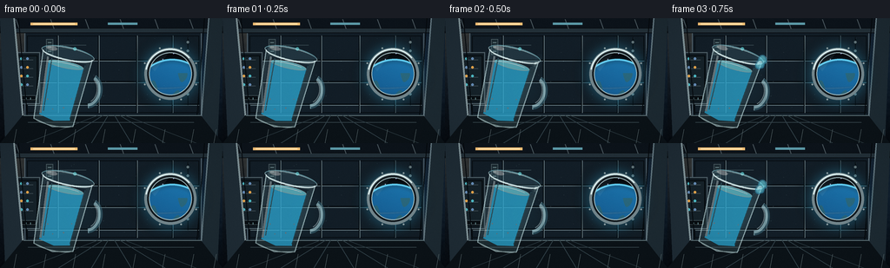
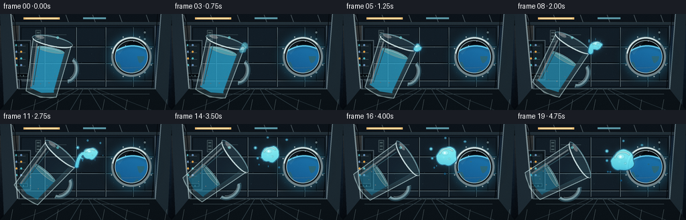
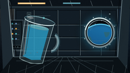
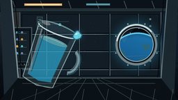
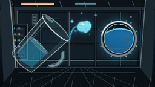
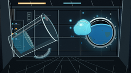
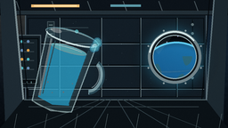
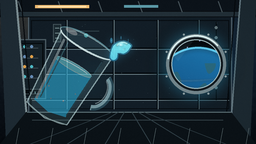
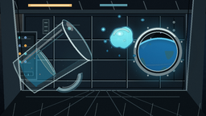

CODING AGENTS AS PIXEL WORLD MODELS
traex/DeepSeek-V4.1-Flash · phygen_001
点击播放 · 原生 RGB 像素
逐轮保存的候选
回放视频、检查图与代码变化。
每份候选均可单独播放。实际图片检查记录在下方工具轨迹中。
候选 01播放与检查图
点击播放 · 原生 RGB 像素


展开代码变化
--- 上一保存版本
+++ 本次保存版本
@@ -0,0 +1,593 @@
+from pathlib import Path
+import math
+
+import numpy as np
+from PIL import Image, ImageChops, ImageDraw, ImageFilter
+
+import artifact_io
+
+
+W, H = 256, 144
+N, FPS = 20, 4.0
+S = 4
+CASE = Path(__file__).resolve().parent
+
+
+def smoothstep(value):
+ value = float(np.clip(value, 0.0, 1.0))
+ return value * value * (3.0 - 2.0 * value)
+
+
+def rgba(color):
+ if len(color) == 3:
+ return (*color, 255)
+ return color
+
+
+def make_background():
+ h, w = H * S, W * S
+ yy, xx = np.mgrid[0:h, 0:w].astype(np.float32)
+ x = xx / S
+ y = yy / S
+ yn = y / (H - 1)
+ xn = x / (W - 1)
+
+ top = np.array([24.0, 37.0, 50.0], dtype=np.float32)
+ bottom = np.array([7.0, 12.0, 18.0], dtype=np.float32)
+ base = top[None, None, :] * (1.0 - yn[..., None]) + bottom[None, None, :] * yn[..., None]
+
+ # Warm cabin light from above-left, cool spill from the window at right.
+ warm = np.exp(-(((x - 48.0) / 78.0) ** 2 + ((y - 7.0) / 48.0) ** 2))
+ cool = np.exp(-(((x - 201.0) / 67.0) ** 2 + ((y - 64.0) / 58.0) ** 2))
+ base += warm[..., None] * np.array([34.0, 23.0, 9.0], dtype=np.float32)
+ base += cool[..., None] * np.array([0.0, 10.0, 19.0], dtype=np.float32)
+
+ rng = np.random.default_rng(417)
+ noise = rng.normal(0.0, 1.0, (H // 2, W // 2)).astype(np.float32)
+ noise = np.asarray(
+ Image.fromarray(np.uint8(np.clip(noise * 18.0 + 128.0, 0, 255))).resize(
+ (w, h), Image.Resampling.BICUBIC
+ ),
+ dtype=np.float32,
+ )
+ base += (noise[..., None] - 128.0) * 0.075
+
+ # Subtle color breakup and vignette keep the flat wall from looking synthetic.
+ base += (0.5 + 0.5 * np.sin(x * 0.072 + np.sin(y * 0.041))) [..., None] * np.array(
+ [1.2, 1.8, 2.2], dtype=np.float32
+ )
+ radius = np.sqrt(((xn - 0.5) / 0.63) ** 2 + ((yn - 0.5) / 0.72) ** 2)
+ vignette = np.clip(1.08 - 0.24 * radius**2, 0.62, 1.06)
+ base *= vignette[..., None]
+
+ image = Image.fromarray(np.uint8(np.clip(base, 0, 255))).convert("RGBA")
+ draw = ImageDraw.Draw(image, "RGBA")
+
+ def p(value):
+ return int(round(value * S))
+
+ def line(points, fill, width=1, joint="curve"):
+ draw.line([(p(px), p(py)) for px, py in points], fill=fill, width=max(1, p(width)), joint=joint)
+
+ def rect(box, fill=None, outline=None, width=1):
+ draw.rectangle((p(box[0]), p(box[1]), p(box[2]), p(box[3])), fill=fill, outline=outline, width=p(width))
+
+ def ellipse(box, fill=None, outline=None, width=1):
+ draw.ellipse((p(box[0]), p(box[1]), p(box[2]), p(box[3])), fill=fill, outline=outline, width=p(width))
+
+ # Cabin shell and panel field.
+ rect((28, 16, 232, 113), fill=(18, 29, 38, 138), outline=(75, 91, 101, 125), width=1.2)
+ rect((31, 20, 229, 109), outline=(7, 13, 18, 150), width=1.0)
+
+ # Horizontal panel seams with inset shadows.
+ for py, alpha in ((48, 95), (73, 75), (99, 90)):
+ line([(32, py), (229, py)], (3, 8, 12, alpha), 1.2)
+ line([(32, py + 1.2), (229, py + 1.2)], (112, 132, 139, 30), 0.7)
+ for px in (66, 113, 157, 198):
+ line([(px, 20), (px, 109)], (4, 10, 15, 115), 1.0)
+ line([(px + 0.9, 20), (px + 0.9, 109)], (119, 139, 145, 24), 0.65)
+
+ # Left equipment rack.
+ rect((8, 39, 46, 99), fill=(16, 26, 33, 230), outline=(72, 88, 96, 170), width=1.2)
+ rect((11, 43, 43, 95), fill=(21, 33, 40, 190), outline=(4, 9, 12, 190), width=1.0)
+ for row in range(4):
+ y0 = 48 + row * 10
+ line([(15, y0), (38, y0)], (63, 77, 84, 150), 0.8)
+ for col in range(3):
+ c = [(220, 158, 72), (76, 182, 192), (99, 137, 177)][(row + col) % 3]
+ ellipse((16 + col * 7, y0 - 3, 19 + col * 7, y0), fill=(*c, 205))
+ rect((12, 89, 41, 94), fill=(7, 13, 17, 180), outline=(84, 102, 108, 90), width=0.6)
+ for index in range(5):
+ line([(15 + index * 5, 91.5), (15 + index * 5, 93.5)], (127, 171, 175, 145), 0.8)
+
+ # Overhead utility rails and a warm practical light.
+ rect((0, 0, 256, 12), fill=(12, 19, 26, 235))
+ rect((0, 11, 256, 17), fill=(34, 47, 55, 205), outline=(7, 11, 15, 180), width=0.8)
+ for px in (18, 58, 98, 138, 178, 218):
+ line([(px, 1), (px + 4, 12)], (71, 84, 90, 95), 1.0)
+ rect((35, 5, 89, 8), fill=(242, 190, 116, 235))
+ line([(38, 6.5), (86, 6.5)], (255, 229, 178, 245), 1.2)
+ rect((124, 5, 158, 7.5), fill=(91, 152, 166, 185))
+
+ # Side ribs frame the shot like the inside of a station module.
+ draw.polygon(
+ [(p(0), p(0)), (p(16), p(0)), (p(29), p(144)), (p(6), p(144))],
+ fill=(30, 43, 52, 220),
+ )
+ draw.polygon(
+ [(p(240), p(0)), (p(256), p(0)), (p(250), p(144)), (p(229), p(144))],
+ fill=(28, 41, 49, 220),
+ )
+ line([(16, 0), (29, 144)], (125, 143, 148, 95), 2.0)
+ line([(240, 0), (229, 144)], (99, 119, 128, 80), 1.6)
+ line([(21, 0), (34, 144)], (5, 9, 13, 210), 1.1)
+ line([(235, 0), (224, 144)], (5, 9, 13, 205), 1.1)
+
+ # Floor and converging deck seams.
+ draw.polygon(
+ [(p(26), p(112)), (p(231), p(112)), (p(256), p(144)), (p(0), p(144))],
+ fill=(11, 18, 23, 195),
+ )
+ line([(27, 112), (231, 112)], (91, 111, 116, 105), 1.1)
+ line([(32, 120), (223, 120)], (55, 70, 76, 110), 0.8)
+ for bx in (30, 67, 105, 151, 190, 226):
+ line([(bx, 144), (128 + (bx - 128) * 0.16, 112)], (47, 62, 69, 120), 0.85)
+ for bx in (16, 50, 84, 118, 153, 187, 220, 246):
+ line([(bx, 144), (bx + 3, 128)], (91, 106, 109, 34), 0.6)
+
+ # A few quiet structural details.
+ rect((53, 24, 61, 42), fill=(27, 41, 48, 210), outline=(72, 88, 94, 85), width=0.7)
+ for iy in (28, 33, 38):
+ line([(55, iy), (59, iy)], (126, 151, 153, 100), 0.7)
+ line([(69, 31), (99, 31)], (54, 72, 79, 160), 0.8)
+ line([(69, 35), (88, 35)], (36, 50, 56, 170), 0.8)
+ ellipse((84, 33.2, 88, 37.2), fill=(66, 148, 152, 130))
+ line([(216, 22), (216, 100)], (4, 9, 13, 150), 0.9)
+ for iy in range(26, 96, 10):
+ ellipse((214.5, iy, 217.5, iy + 3), fill=(109, 125, 128, 90))
+
+ # Soft atmospheric glow around the porthole.
+ glow = Image.new("RGBA", image.size, (0, 0, 0, 0))
+ gd = ImageDraw.Draw(glow, "RGBA")
+ gd.ellipse((p(158), p(26), p(234), p(102)), fill=(46, 150, 188, 55))
+ glow = glow.filter(ImageFilter.GaussianBlur(p(8)))
+ image = Image.alpha_composite(image, glow)
+
+ # Circular observation window with an Earth limb.
+ wcx, wcy, wr = 196.0, 64.0, 30.0
+ wl = Image.new("RGBA", image.size, (0, 0, 0, 0))
+ wd = ImageDraw.Draw(wl, "RGBA")
+ wd.ellipse((p(wcx - wr), p(wcy - wr), p(wcx + wr), p(wcy + wr)), fill=(2, 7, 13, 255))
+
+ rng = np.random.default_rng(82)
+ for _ in range(31):
+ angle = rng.uniform(0, math.tau)
+ radius = wr * math.sqrt(rng.uniform(0.02, 0.92))
+ sx = wcx + math.cos(angle) * radius
+ sy = wcy + math.sin(angle) * radius
+ if sy < 64:
+ sr = rng.uniform(0.22, 0.75)
+ brightness = rng.integers(115, 245)
+ wd.ellipse((p(sx - sr), p(sy - sr), p(sx + sr), p(sy + sr)), fill=(brightness, brightness, 255, 190))
+
+ # Planet gradient, clipped later by the round window.
+ ex, ey, er = 198.0, 91.0, 43.0
+ earth = Image.new("RGBA", image.size, (0, 0, 0, 0))
+ ea = np.zeros((H * S, W * S, 4), dtype=np.uint8)
+ dist = np.sqrt((x - ex) ** 2 + (y - ey) ** 2)
+ inside = dist < er
+ north = np.clip((ey - y) / er, -1.0, 1.0)
+ light = np.clip(0.53 + 0.32 * north + 0.16 * np.clip((x - ex) / er, -1.0, 1.0), 0.12, 1.0)
+ ocean_deep = np.array([8.0, 35.0, 81.0])
+ ocean_bright = np.array([28.0, 118.0, 173.0])
+ shade = np.clip(0.36 + 0.64 * light, 0.0, 1.0)
+ color = ocean_deep[None, None, :] * (1.0 - shade[..., None]) + ocean_bright[None, None, :] * shade[..., None]
+ cloud_field = (
+ np.sin(x * 0.23 + y * 0.06)
+ + 0.55 * np.sin(x * 0.09 - y * 0.19 + 1.1)
+ + 0.35 * np.cos(x * 0.31 + y * 0.13)
+ )
+ land = inside & (cloud_field > 0.78) & (y > 63)
+ color[land] = color[land] * 0.46 + np.array([54.0, 98.0, 91.0]) * 0.54
+ ea[..., :3] = np.uint8(np.clip(color, 0, 255))
+ ea[..., 3] = np.where(inside, 255, 0).astype(np.uint8)
+ earth = Image.fromarray(ea)
+
+ # Thin cloud bands with soft edges.
+ clouds = Image.new("RGBA", image.size, (0, 0, 0, 0))
+ cd = ImageDraw.Draw(clouds, "RGBA")
+ for cx0, cy0, rx, ry, rot in (
+ (184, 77, 35, 4.2, -8),
+ (214, 86, 27, 3.0, 12),
+ (197, 96, 38, 3.8, 2),
+ (174, 91, 21, 2.1, -19),
+ ):
+ bbox = (p(cx0 - rx), p(cy0 - ry), p(cx0 + rx), p(cy0 + ry))
+ cd.arc(bbox, start=rot, end=180 + rot, fill=(225, 241, 244, 90), width=p(1.3))
+ clouds = clouds.filter(ImageFilter.GaussianBlur(p(0.8)))
+ earth = Image.alpha_composite(earth, clouds)
+
+ # Atmosphere and earth rim.
+ atm = Image.new("RGBA", image.size, (0, 0, 0, 0))
+ ad = ImageDraw.Draw(atm, "RGBA")
+ ad.arc(
+ (p(ex - er - 1.2), p(ey - er - 1.2), p(ex + er + 1.2), p(ey + er + 1.2)),
+ start=180,
+ end=360,
+ fill=(102, 217, 255, 225),
+ width=p(2.0),
+ )
+ atm_glow = atm.filter(ImageFilter.GaussianBlur(p(2.2)))
+ earth = Image.alpha_composite(earth, atm_glow)
+ earth = Image.alpha_composite(earth, atm)
+ wl = Image.alpha_composite(wl, earth)
+
+ # Window glass reflection and dark rim.
+ glass = Image.new("RGBA", image.size, (0, 0, 0, 0))
+ gd = ImageDraw.Draw(glass, "RGBA")
+ gd.polygon(
+ [(p(171), p(54)), (p(184), p(38)), (p(196), p(37)), (p(178), p(61))],
+ fill=(187, 229, 238, 16),
+ )
+ wl = Image.alpha_composite(wl, glass)
+
+ mask = Image.new("L", image.size, 0)
+ md = ImageDraw.Draw(mask)
+ md.ellipse((p(wcx - wr), p(wcy - wr), p(wcx + wr), p(wcy + wr)), fill=255)
+ wl.putalpha(ImageChops.multiply(wl.getchannel("A"), mask))
+ image = Image.alpha_composite(image, wl)
+
+ draw = ImageDraw.Draw(image, "RGBA")
+ ellipse(
+ (wcx - wr, wcy - wr, wcx + wr, wcy + wr),
+ outline=(111, 130, 136, 255),
+ width=6.2,
+ )
+ ellipse(
+ (wcx - wr + 3.2, wcy - wr + 3.2, wcx + wr - 3.2, wcy + wr - 3.2),
+ outline=(17, 25, 30, 245),
+ width=2.0,
+ )
+ ellipse(
+ (wcx - wr + 5.4, wcy - wr + 5.4, wcx + wr - 5.4, wcy + wr - 5.4),
+ outline=(165, 191, 195, 120),
+ width=0.8,
+ )
+ draw.arc(
+ (p(wcx - wr + 1), p(wcy - wr + 1), p(wcx + wr - 1), p(wcy + wr - 1)),
+ start=190,
+ end=320,
+ fill=(220, 240, 240, 185),
+ width=p(1.4),
+ )
+ for index in range(8):
+ angle = math.tau * index / 8 + math.pi / 8
+ bx = wcx + math.cos(angle) * (wr + 2.0)
+ by = wcy + math.sin(angle) * (wr + 2.0)
+ ellipse((bx - 1.0, by - 1.0, bx + 1.0, by + 1.0), fill=(132, 150, 154, 225))
+
+ # Fine cabin dust caught in the cool light.
+ dust = Image.new("RGBA", image.size, (0, 0, 0, 0))
+ dd = ImageDraw.Draw(dust, "RGBA")
+ rng = np.random.default_rng(91)
+ for _ in range(44):
+ dx = rng.uniform(24, 228)
+ dy = rng.uniform(20, 116)
+ a = int(rng.integers(12, 42))
+ dd.ellipse((p(dx), p(dy), p(dx + 0.45), p(dy + 0.45)), fill=(184, 219, 226, a))
+ image = Image.alpha_composite(image, dust)
+
+ return image.convert("RGB")
+
+
+BACKGROUND = make_background()
+
+
+def cup_spout(center, angle):
+ phi = math.radians(angle)
+ lx, ly = 29.5, -39.0
+ return (
+ center[0] + math.cos(phi) * lx - math.sin(phi) * ly,
+ center[1] + math.sin(phi) * lx + math.cos(phi) * ly,
+ )
+
+
+def render_cup(center, angle, t):
+ size = 128
+ sprite = Image.new("RGBA", (size * S, size * S), (0, 0, 0, 0))
+ d = ImageDraw.Draw(sprite, "RGBA")
+
+ def p(value):
+ return int(round(value * S))
+
+ def lp(px, py):
+ return (p(64 + px), p(64 + py))
+
+ def poly(points, fill=None, outline=None, width=1):
+ d.polygon([lp(px, py) for px, py in points], fill=fill)
+ if outline is not None:
+ d.line([lp(px, py) for px, py in points + [points[0]]], fill=outline, width=p(width), joint="curve")
+
+ # Handle is seen through the glass, so it is drawn first and kept cool.
+ d.arc((p(81), p(43), p(112), p(83)), start=-74, end=78, fill=(171, 216, 224, 155), width=p(5.4))
+ d.arc((p(81), p(43), p(112), p(83)), start=-72, end=74, fill=(63, 112, 129, 125), width=p(2.2))
+ d.arc((p(85), p(48), p(106), p(77)), start=-66, end=56, fill=(228, 250, 250, 100), width=p(1.1))
+
+ body = [(-29, -39), (29, -39), (23, 43), (0, 48), (-23, 43)]
+ poly(body, fill=(142, 194, 205, 34), outline=(204, 237, 239, 152), width=1.15)
+ poly([(-24, -30), (23, -30), (18, 37), (0, 41), (-18, 37)], fill=(45, 86, 100, 22))
+
+ # Remaining water clings inside the glass and drains as the cup turns.
+ remaining = 1.0 - 0.92 * smoothstep((t - 0.08) / 0.78)
+ if remaining > 0.05:
+ water_top = 13.0 - 38.0 * remaining
+ water_body = [(-21, water_top), (21, water_top), (18, 37), (0, 41), (-18, 37)]
+ poly(water_body, fill=(44, 164, 205, int(105 + 90 * remaining)))
+ d.ellipse(
+ (p(64 - 21), p(64 + water_top - 4), p(64 + 21), p(64 + water_top + 4)),
+ fill=(111, 218, 232, int(100 + 70 * remaining)),
+ outline=(201, 248, 248, 135),
+ width=p(0.8),
+ )
+ d.arc(
+ (p(64 - 17), p(64 + water_top - 2), p(64 + 17), p(64 + water_top + 2)),
+ start=196,
+ end=335,
+ fill=(235, 255, 255, 175),
+ width=p(0.8),
+ )
+
+ # Reflective edges, bottom thickness, and condensation.
+ d.line([lp(-22, -30), lp(-17, 35)], fill=(235, 255, 255, 92), width=p(2.4))
+ d.line([lp(-17, -29), lp(-14, 32)], fill=(107, 189, 204, 75), width=p(1.2))
+ d.line([lp(22, -29), lp(18, 35)], fill=(74, 130, 143, 75), width=p(1.5))
+ d.arc((p(64 - 22), p(64 + 38), p(64 + 22), p(64 + 47)), start=8, end=172, fill=(209, 241, 240, 130), width=p(1.0))
+ for gx, gy, gr in ((-12, 18, 0.7), (-4, 28, 0.55), (8, 24, 0.65), (15, 12, 0.5)):
+ d.ellipse(
+ (p(64 + gx - gr), p(64 + gy - gr), p(64 + gx + gr), p(64 + gy + gr)),
+ fill=(238, 255, 255, 95),
+ )
+
+ # Back rim and front lip.
+ d.ellipse((p(64 - 31), p(64 - 45), p(64 + 31), p(64 - 31)), fill=(90, 151, 165, 48), outline=(202, 236, 237, 142), width=p(1.1))
+ d.arc(
+ (p(64 - 30), p(64 - 44), p(64 + 30), p(64 - 30)),
+ start=4,
+ end=174,
+ fill=(232, 254, 254, 205),
+ width=p(1.7),
+ )
+ d.arc(
+ (p(64 - 31), p(64 - 46), p(64 + 31), p(64 - 29)),
+ start=190,
+ end=343,
+ fill=(120, 190, 202, 155),
+ width=p(1.1),
+ )
+ d.ellipse((p(64 - 26), p(64 - 43), p(64 - 13), p(64 - 38)), fill=(248, 255, 255, 90))
+
+ sprite = sprite.rotate(-angle, resample=Image.Resampling.BICUBIC, center=(64 * S, 64 * S), expand=False)
+ return sprite
+
+
+def blob_polygon(cx, cy, rx, ry, phase):
+ points = []
+ for index in range(80):
+ theta = math.tau * index / 80
+ ripple = (
+ 1.0
+ + 0.065 * math.sin(3.0 * theta + phase)
+ + 0.032 * math.sin(5.0 * theta - 1.4 * phase)
+ + 0.017 * math.cos(7.0 * theta + 0.7 * phase)
+ )
+ points.append((cx + math.cos(theta) * rx * ripple, cy + math.sin(theta) * ry * ripple))
+ return points
+
+
+def render_water(t, cup_center, cup_angle):
+ if t < 0.095:
+ return Image.new("RGBA", (W * S, H * S), (0, 0, 0, 0))
+
+ u = float(np.clip((t - 0.11) / 0.89, 0.0, 1.0))
+ eu = smoothstep(u)
+ mx = 105.0 + 57.0 * eu + 2.1 * math.sin(math.tau * u)
+ my = 53.0 - 7.5 * math.sin(math.pi * u) + 2.2 * math.sin(math.tau * u + 0.6)
+ rx = 4.6 + 12.7 * eu + 0.8 * math.sin(math.tau * u + 0.2)
+ ry = 4.2 + 11.3 * eu + 0.9 * math.sin(math.tau * u + 1.3)
+ phase = 0.7 + 4.8 * t
+ spout = cup_spout(cup_center, cup_angle)
+
+ mask = Image.new("L", (W * S, H * S), 0)
+ md = ImageDraw.Draw(mask)
+
+ def p(value):
+ return int(round(value * S))
+
+ def fill_ellipse(cx, cy, ex, ey):
+ md.ellipse((p(cx - ex), p(cy - ey), p(cx + ex), p(cy + ey)), fill=255)
+
+ md.polygon([(p(px), p(py)) for px, py in blob_polygon(mx, my, rx, ry, phase)], fill=255)
+ # A second lobe gives the globule an irregular, low-gravity silhouette.
+ fill_ellipse(mx - rx * 0.44, my + ry * 0.22, rx * 0.62, ry * 0.72)
+
+ # The liquid neck stretches from the cup lip and narrows before pinch-off.
+ neck_visible = t < 0.72
+ if neck_visible:
+ neck_scale = 1.0 - smoothstep((t - 0.52) / 0.20)
+ p0 = spout
+ p1 = (spout[0] + (mx - spout[0]) * 0.24, min(spout[1], my) - 10.0)
+ p2 = (spout[0] + (mx - spout[0]) * 0.73, my + 3.5)
+ p3 = (mx - rx * 0.45, my)
+ for step in range(30):
+ v = step / 29.0
+ omt = 1.0 - v
+ bx = omt**3 * p0[0] + 3 * omt**2 * v * p1[0] + 3 * omt * v**2 * p2[0] + v**3 * p3[0]
+ by = omt**3 * p0[1] + 3 * omt**2 * v * p1[1] + 3 * omt * v**2 * p2[1] + v**3 * p3[1]
+ width = (4.5 - 1.4 * v) * max(0.20, neck_scale)
+ fill_ellipse(bx, by, width, width * (0.9 + 0.1 * math.sin(step * 1.7)))
+
+ # Droplets shed from the stretching neck.
+ if t > 0.48:
+ for index, (lag, offx, offy, size) in enumerate(
+ ((0.10, -7, -8, 2.2), (0.17, 3, -11, 1.5), (0.24, -2, 9, 1.3))
+ ):
+ du = float(np.clip((t - 0.48 - index * 0.035) / 0.42, 0.0, 1.0))
+ dx = spout[0] + (mx - spout[0]) * (0.40 + 0.25 * du) + offx * du
+ dy = spout[1] + (my - spout[1]) * (0.46 + 0.20 * du) + offy * du
+ fill_ellipse(dx, dy, size * (0.65 + 0.35 * du), size)
+
+ # Free-floating satellite droplets, each with a slightly different drift.
+ droplet_specs = (
+ (-2.55, 13.0, 2.7, 0.25),
+ (-1.70, 16.0, 1.8, 0.32),
+ (-0.85, 20.0, 2.2, 0.38),
+ (0.15, 22.0, 1.45, 0.44),
+ (0.95, 17.0, 2.0, 0.50),
+ (1.75, 19.0, 1.55, 0.58),
+ (2.45, 14.0, 1.2, 0.65),
+ )
+ for index, (theta, distance, radius, appear) in enumerate(droplet_specs):
+ if t < appear:
+ continue
+ age = smoothstep((t - appear) / 0.35)
+ orbit = theta + 0.12 * math.sin(math.tau * t + index)
+ dx = mx + math.cos(orbit) * (rx + distance * age)
+ dy = my + math.sin(orbit) * (ry + distance * 0.78 * age)
+ dx += 1.5 * age * math.sin(index + 0.8)
+ dy += 1.1 * age * math.cos(index * 1.7)
+ fill_ellipse(dx, dy, radius * age, radius * (0.85 + 0.15 * math.cos(index)))
+
+ reveal = smoothstep((t - 0.095) / 0.11)
+ if reveal < 0.999:
+ mask = ImageChops.multiply(mask, Image.new("L", mask.size, int(255 * reveal)))
+
+ mask_np = np.asarray(mask, dtype=np.float32) / 255.0
+ h, w = mask.size[1], mask.size[0]
+ yy, xx = np.mgrid[0:h, 0:w].astype(np.float32)
+ yn = yy / max(1, h - 1)
+ xn = xx / max(1, w - 1)
+ local_top = np.clip((yn - 0.26) / 0.36, 0.0, 1.0)
+ top_color = np.array([118.0, 225.0, 241.0], dtype=np.float32)
+ mid_color = np.array([34.0, 166.0, 210.0], dtype=np.float32)
+ deep_color = np.array([14.0, 73.0, 139.0], dtype=np.float32)
+ blend = local_top[..., None]
+ color = top_color * (1.0 - blend) + mid_color * blend
+ lower = np.clip((yn - 0.45) / 0.34, 0.0, 1.0)[..., None]
+ color = color * (1.0 - lower) + deep_color * lower
+ light = np.exp(-(((xn - 0.60) / 0.23) ** 2 + ((yn - 0.33) / 0.27) ** 2))
+ color += light[..., None] * np.array([17.0, 20.0, 10.0])
+ rgba_np = np.zeros((h, w, 4), dtype=np.uint8)
+ rgba_np[..., :3] = np.uint8(np.clip(color, 0, 255))
+ rgba_np[..., 3] = np.uint8(np.clip(mask_np * 232.0, 0, 255))
+ water = Image.fromarray(rgba_np)
+
+ # Cyan bloom just outside the liquid.
+ glow_mask = mask.filter(ImageFilter.GaussianBlur(p(3.7)))
+ glow_color = Image.new("RGBA", water.size, (47, 164, 215, 0))
+ glow_color.putalpha(glow_mask.point(lambda v: int(v * 0.30)))
+ glow_color = glow_color.filter(ImageFilter.GaussianBlur(p(1.8)))
+
+ # Dark refractive edge and blue-white rim light.
+ eroded = mask.filter(ImageFilter.MinFilter(max(3, p(1.1) * 2 + 1)))
+ edge = ImageChops.subtract(mask, eroded)
+ dark_edge = Image.new("RGBA", water.size, (3, 41, 78, 0))
+ dark_edge.putalpha(edge.point(lambda v: int(v * 0.62)))
+ water = Image.alpha_composite(water, dark_edge)
+
+ highlights = Image.new("RGBA", water.size, (0, 0, 0, 0))
+ hd = ImageDraw.Draw(highlights, "RGBA")
+ hd.arc(
+ (p(mx - rx * 0.78), p(my - ry * 0.80), p(mx + rx * 0.75), p(my + ry * 0.72)),
+ start=192,
+ end=322,
+ fill=(229, 255, 255, 175),
+ width=p(1.65),
+ )
+ hd.ellipse(
+ (p(mx - rx * 0.52), p(my - ry * 0.56), p(mx + rx * 0.12), p(my - ry * 0.10)),
+ fill=(230, 255, 255, 65),
+ )
+ hd.ellipse(
+ (p(mx - rx * 0.33), p(my - ry * 0.42), p(mx - rx * 0.13), p(my - ry * 0.22)),
+ fill=(255, 255, 255, 205),
+ )
+ hd.ellipse(
+ (p(mx + rx * 0.12), p(my + ry * 0.20), p(mx + rx * 0.28), p(my + ry * 0.36)),
+ fill=(174, 241, 249, 95),
+ )
+ highlights = highlights.filter(ImageFilter.GaussianBlur(p(0.42)))
+ water = Image.alpha_composite(water, highlights)
+
+ # Tiny entrained bubbles read as sparkle without overpowering the silhouette.
+ bubbles = Image.new("RGBA", water.size, (0, 0, 0, 0))
+ bd = ImageDraw.Draw(bubbles, "RGBA")
+ for bx, by, br in ((-0.33, 0.14, 0.9), (0.22, -0.28, 0.7), (0.08, 0.33, 0.55)):
+ bd.ellipse(
+ (p(mx + bx * rx - br), p(my + by * ry - br), p(mx + bx * rx + br), p(my + by * ry + br)),
+ outline=(228, 255, 255, 105),
+ width=p(0.35),
+ )
+ water = Image.alpha_composite(water, bubbles)
+
+ combined = Image.alpha_composite(glow_color, water)
+ return combined
+
+
+def add_post(image):
+ # Gentle highlight bloom and color separation.
+ arr = np.asarray(image.convert("RGB"), dtype=np.float32) / 255.0
+ bright = np.clip((arr - 0.72) / 0.28, 0.0, 1.0)
+ bright = bright.mean(axis=2)
+ bloom = Image.fromarray(np.uint8(bright * 255.0)).filter(ImageFilter.GaussianBlur(7 * S))
+ bloom_np = np.asarray(bloom, dtype=np.float32) / 255.0
+ arr = np.clip(arr + bloom_np[..., None] * np.array([0.09, 0.055, 0.025]), 0.0, 1.0)
+
+ yy, xx = np.mgrid[0 : H * S, 0 : W * S].astype(np.float32)
+ xn = xx / (W * S - 1)
+ yn = yy / (H * S - 1)
+ radius = np.sqrt(((xn - 0.5) / 0.62) ** 2 + ((yn - 0.5) / 0.72) ** 2)
+ vig = np.clip(1.045 - 0.095 * radius**2, 0.88, 1.02)
+ arr *= vig[..., None]
+
+ # A whisper of grain prevents the gradients from banding after resampling.
+ rng = np.random.default_rng(773)
+ grain = rng.normal(0.0, 0.0065, (H * S, W * S, 1)).astype(np.float32)
+ arr = np.clip(arr + grain, 0.0, 1.0)
+ return Image.fromarray(np.uint8(arr * 255.0)).resize((W, H), Image.Resampling.LANCZOS)
+
+
+def main():
+ frames = []
+ for index in range(N):
+ t = index / (N - 1)
+ angle = 12.0 + 48.0 * smoothstep(t) + 1.2 * math.sin(math.tau * t * 1.35)
+ center = (
+ 70.0 - 5.0 * smoothstep(t) + 0.8 * math.sin(math.tau * t * 0.85 + 0.4),
+ 78.0 - 6.0 * smoothstep(t) + 0.9 * math.sin(math.tau * t * 1.05),
+ )
+
+ frame = BACKGROUND.copy().convert("RGBA")
+
+ # A diffuse cool reflection behind the glass adds depth without a fake floor shadow.
+ sheen = Image.new("RGBA", frame.size, (0, 0, 0, 0))
+ sd = ImageDraw.Draw(sheen, "RGBA")
+ sd.ellipse((70 * S, 53 * S, 118 * S, 110 * S), fill=(61, 151, 177, 16))
+ sheen = sheen.filter(ImageFilter.GaussianBlur(10 * S))
+ frame = Image.alpha_composite(frame, sheen)
+
+ cup = render_cup(center, angle, t)
+ frame.alpha_composite(cup, (int(center[0] * S - 64 * S), int(center[1] * S - 64 * S)))
+
+ water = render_water(t, center, angle)
+ frame = Image.alpha_composite(frame, water)
+
+ frame = add_post(frame)
+ frames.append(np.asarray(frame, dtype=np.uint8))
+
+ frames = np.stack(frames, axis=0)
+ artifact_io.save(frames, CASE)
+ print(f"wrote {len(frames)} frames to {CASE}")
+
+
+if __name__ == "__main__":
+ main()
可观测工具轨迹
实际执行的命令与返回图片。
命令 1exit 0
/bin/bash -c "pwd && rg --files -g 'prompt.txt' -g 'GENERATION_RULES.md' -g 'task_spec.json' -g '"'!node_modules'"'"
命令 2exit 0
/bin/bash -c "sed -n '1,240p' prompt.txt"
命令 3exit 0
/bin/bash -c "sed -n '1,300p' GENERATION_RULES.md"
命令 4exit 0
/bin/bash -c 'cat task_spec.json'
命令 5exit 0
/bin/bash -c "find . -maxdepth 2 -type f -printf '%p %s bytes\\n' | sort | head -200"
命令 6exit 0
/bin/bash -c "sed -n '1,260p' artifact_io.py"
命令 7exit 1
/bin/bash -c 'python generate.py'
命令 8exit 0
/bin/bash -c 'python generate.py'
命令 9exit 1
/bin/bash -c 'which ffmpeg && ffmpeg -version | head -1'
命令 10exit 0
/bin/bash -c 'which magick || which convert || true'
命令 11exit 0
/bin/bash -c 'python -m py_compile generate.py && find frames -maxdepth 1 -type f | wc -l && du -sh .'
命令 12exit 0
/bin/bash -c 'git status --short 2>/dev/null || true'
命令 13exit 0
/bin/bash -c "python - <<'PY'
import json
from pathlib import Path
import numpy as np
from PIL import Image
p=Path('.')
spec=json.loads((p/'task_spec.json').read_text())
z=np.load(p/'pixels.npz')['pixels']
print('pixels.npz', z.shape, z.dtype)
print('frame files', len(list((p/'frames').glob('*.png'))))
imgs=[np.asarray(Image.open(p/'frames'/f'{i:02d}.png')) for i in range(spec['frames'])]
print('image checks', {x.shape for x in imgs}, {str(x.dtype) for x in imgs})
means=np.array([x.mean() for x in imgs])
diffs=np.array([np.abs(imgs[i].astype(np.int16)-imgs[i-1].astype(np.int16)).mean() for i in range(1,len(imgs))])
print('mean luminance range', round(means.min(),2), round(means.max(),2))
print('adjacent diff min/max', round(diffs.min(),2), round(diffs.max(),2))
print('index.html', (p/'index.html').stat().st_size, 'bytes')
PY"视觉工具实际返回图片 1

视觉工具实际返回图片 2

视觉工具实际返回图片 3

视觉工具实际返回图片 4

视觉工具实际返回图片 5

视觉工具实际返回图片 6

视觉工具实际返回图片 7

视觉工具实际返回图片 8

视觉工具实际返回图片 9

保存候选 1 份；完成命令 13 次；可验证图片返回 9 张。原始 API 响应与完整日志保留在本地。